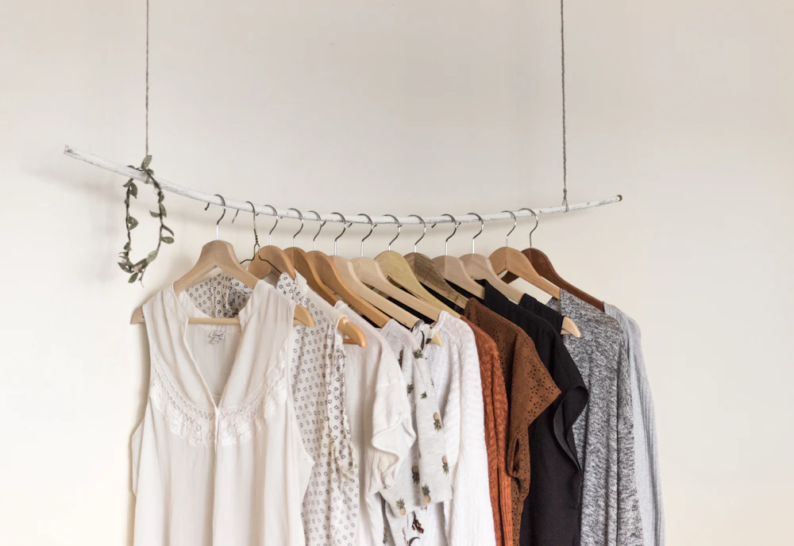

Пять направлений профессионального ухода. В каждой истории сначала — осмотр и понимание материала, затем — согласованный способ чистки.

01 / На каждый день
Химчистка повседневной одежды.
Рубашки, брюки и трикотаж — основа гардероба. Профессиональный уход подбирается по составу ткани, маркировке и состоянию вещи. Задача — освежить изделие с вниманием к его фактуре и форме.
Осмотр воротников, манжет, швов и фурнитуры.
Оценка загрязнений и стойкости цвета.
Подбор допустимого способа чистки и финишного ухода.
Примерные демо-ценыот 450 ₽
Рубашка — от 450 ₽, брюки — от 600 ₽, свитер — от 700 ₽. Итоговая стоимость определяется после осмотра.
Пальто, куртки и пуховики требуют отдельной оценки наполнителя, отделки и покрытия. Не все материалы допускают одинаковую обработку: возможность безопасного ухода определяется при осмотре.
Проверка подкладки, наполнителя и декоративных деталей.
Внимание к воротникам, карманам и участкам трения.
Согласование способа чистки с учётом рекомендаций производителя.
Примерные демо-ценыот 1 200 ₽
Куртка — от 1 200 ₽, пальто — от 1 500 ₽, пуховик — от 1 700 ₽. Размер и конструкция могут влиять на стоимость.
У обуви несколько материалов и много деталей: верх, подошва, шнурки, клеевые соединения. Для текстиля, кожи и комбинированных пар нужны разные средства и способы обработки.
Оценка материалов, соединений и стойкости цвета.
Чистка верха и подошвы с учётом их особенностей.
Обсуждение ограничений для замши, декора и изношенных участков.
Примерные демо-цены за паруот 900 ₽
Кроссовки — от 900 ₽, гладкая кожаная обувь — от 1 100 ₽. Реставрация, ремонт и окрашивание не включены.
Шёлк, шерсть и сложная отделка требуют особенно осторожного подхода. Состав, конструкция и состояние изделия определяют, возможна ли безопасная чистка. Иногда отказ от обработки — самый бережный выбор.
Осмотр подкладки, клеевых элементов и фурнитуры.
Учёт формы и особенностей отделки.
Согласование рисков до начала ухода, без обещаний удалить любое пятно.
Примерные демо-ценыот 950 ₽
Платье — от 950 ₽, костюм из двух предметов — от 1 400 ₽. Сложная отделка оценивается индивидуально.
Пледы, одеяла и шторы сохраняют уют, но накапливают пыль и загрязнения. Для крупного текстиля важны размер, вес, тип ткани и наполнителя — эти параметры уточняют до расчёта.
Оценка материала, наполнителя и маркировки.
Индивидуальный расчёт для штор и нестандартных размеров.
Рекомендации по хранению и дальнейшему уходу.
Примерные демо-ценыот 1 100 ₽
Плед до 2 × 2 м — от 1 100 ₽, стандартное двуспальное одеяло — от 1 400 ₽. Шторы не включены в калькулятор.